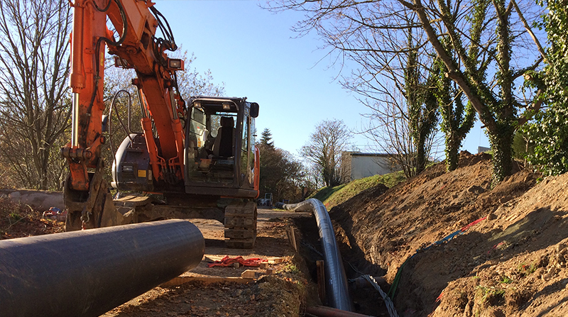

Commune de Pleven (22), usine de production d’eau potable du syndicat mixte de l’Arguenon penthièvre, tubage d’une canalisation eaux pluviales acier Ø 600 existante par une canalisation PEHD PE 100-RC Ø 517.2/560 PN 6
La réhabilitation du réseau d’eaux pluviales a été réalisée par tubage de la canalisation existante. Les barres de PEHD 100-RC ont été préalablement soudées bout à bout par polyfusion par nos soudeurs qualifiés puis introduit dans les fosses préalablement préparées. Le tubage fût réalisé par la mise en place de notre matériel « Aquarex TERRA EXTRACTOR X 400 » de 40 T.
